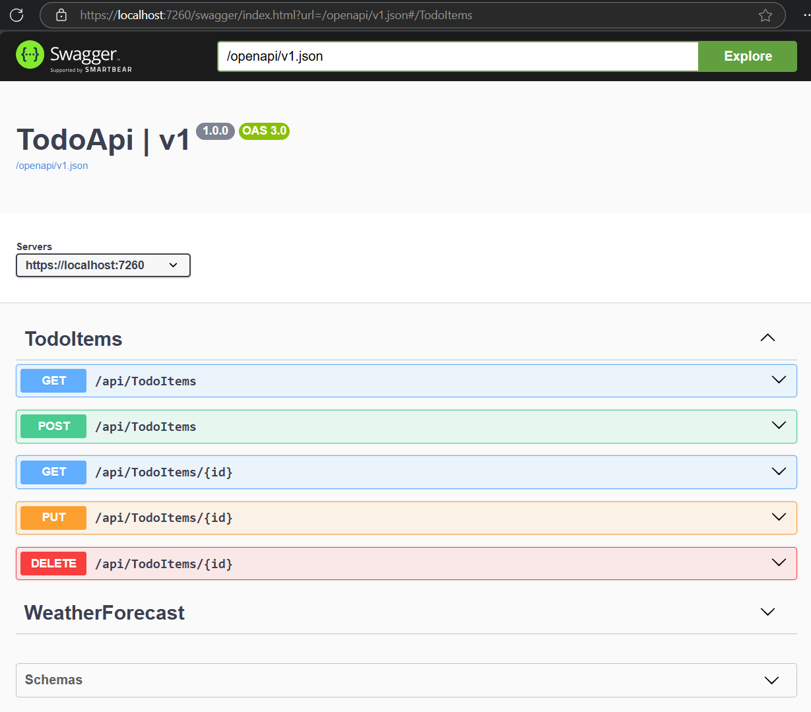

ASP.NET Core Todo API

Overview
A simple but powerful RESTful Web API built with ASP.NET Core and Entity Framework, designed as a learning project to practice backend development fundamentals. The API manages Todo items with full CRUD functionality, following clean design principles for scalability and maintainability.
Features
- CRUD Endpoints: Create, Read, Update, Delete operations for managing Todo items
- Entity Framework Integration: Data models and controllers built with EF Core
- Swagger UI: Interactive API documentation and testing directly in the browser
- In-memory Database: Used for lightweight testing and experimentation
What I Learned
- How to design and implement RESTful APIs with ASP.NET Core
- Hands-on experience with routing, dependency injection, and HTTP methods
- Using Swagger for testing and documenting APIs
- Strengthened backend fundamentals and confidence in full-stack workflows